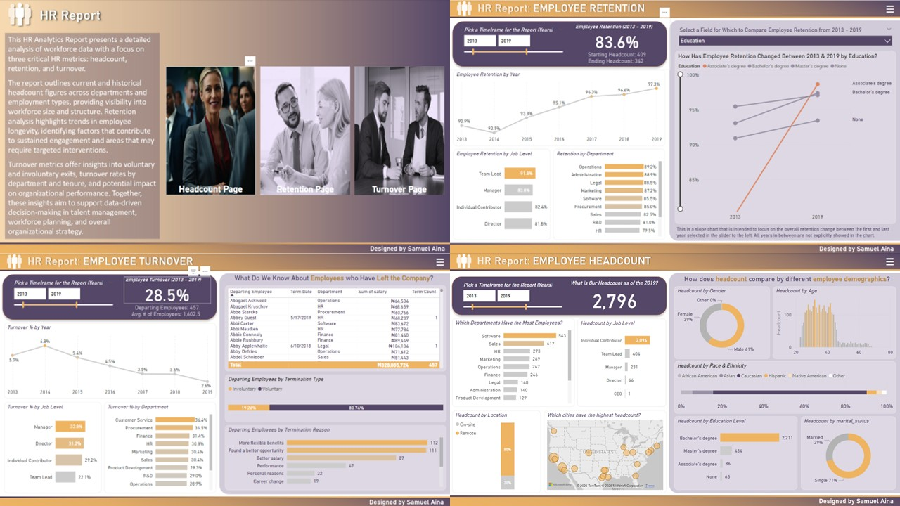
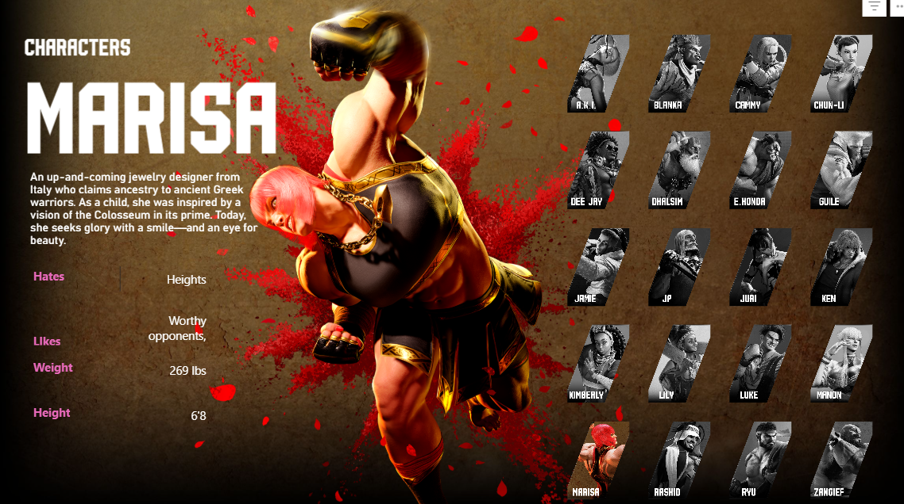
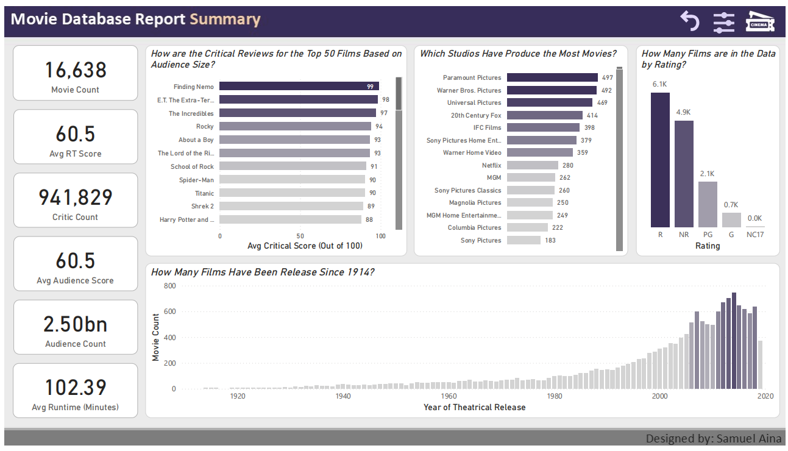

Austin Housing Market Insight
This Power BI dashboard turns real estate data into interactive insights—explore school ratings, price trends, and neighborhood maps with dynamic filters and smart visuals. A clean, compelling story from raw data to real value.

Kraken Koffee Infographic Project
This infographic project breaks down Kraken Koffee’s sales data into powerful visuals, uncovering trends and delivering actionable recommendations through smart modeling and storytelling.

HR Dashboard Project
Built in Power BI, this dashboard tracks headcount, retention, and turnover trends (2013–2019) with smart visuals and dynamic filtering—empowering strategic HR decisions through clean data and impactful storytelling.

Optimizing Retail Sales with BI
Analyzed sales and marketing performance for a food & beverage vendor using Power BI. Built dashboards to track campaign effectiveness, customer demographics, and purchase drivers, helping optimize marketing strategies with data-driven insights.

Street Fighter Project
This guided project involved building an interactive Street Fighter-themed dashboard in Power BI, showcasing skills in using image URLs, SVG integration, custom card visuals, and dynamic slicers to enhance user interaction and visual storytelling.

Movie Analytics Dashboard
This project explores a dataset of over 16,000 movies using Power BI to uncover trends in ratings, genres, and contributor performance. I applied star schema modeling, Power Query transformations, and DAX to build an interactive dashboard with drillthroughs, slicers, and tooltips. The dashboard reveals how audience and critic scores differ, highlights top-performing genres and studios, and analyzes the impact of directors, writers, and actors on movie success.